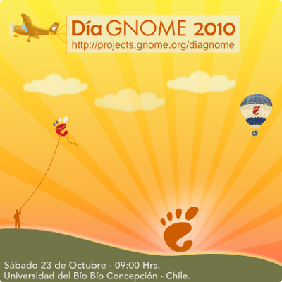

Día GNOME 2010
El evento más grande de GNOME en la costa del Pacífico
Siguiendo la filosofía del proyecto, el Día GNOME es un espacio libre, horizontal y accesible para conocer a otros entusiastas y desarrolladores, compartir ideas, quejas, proyectos, todo en un ambiente de amistad y buena onda.
Como en ocasiones anteriores, y gracias al apoyo de la Fundación GNOME y el XI Encuentro Linux, nos acompañarán expositores internacionales que compartirán con nosotros sus experiencias y anécdotas.
El evento se llevará a cabo el día sábado 23 de octubre de 2010 en la Universidad del Bío-Bío, campus Concepción en la ciudad de Concepción, Chile, enmarcado dentro del XI Encuentro Linux a realizarse los días jueves 21 y viernes 22 de octubre en dicha ciudad.
Mantente informado a través de
 o de
o de

Llamado a presentar trabajos
El grupo local de GNOME "GNOME Chile" tiene el agrado de invitar a todos los entusiastas, usuarios y desarrolladores del proyecto GNOME a presentar sus trabajos dentro de la realización del evento del Día GNOME.
¡Participa!
La inscripción no tiene costo, sólo debes inscribirte en esta página (pronto habilitaremos el registro), que nos ayudará a programarnos de mejor forma.
El salón donde se realizará el evento tiene una capacidad máxima de 300 personas y tendrán preferencia las personas inscritas.
- ¿Asistirás al evento? ¡Inscríbete! (pronto habilitaremos el registro)
- Subscríbete a la lista de correo de GNOME Chile
- Visita el sitio de GNOME Chile
- Participa en el grupo de facebook o en twitter

Coordenadas
Sábado 23 de octubre en la Universidad del Bío-Bío, campus Concepción.
Av. Collao Nº1202, Concepción, Chile.